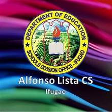
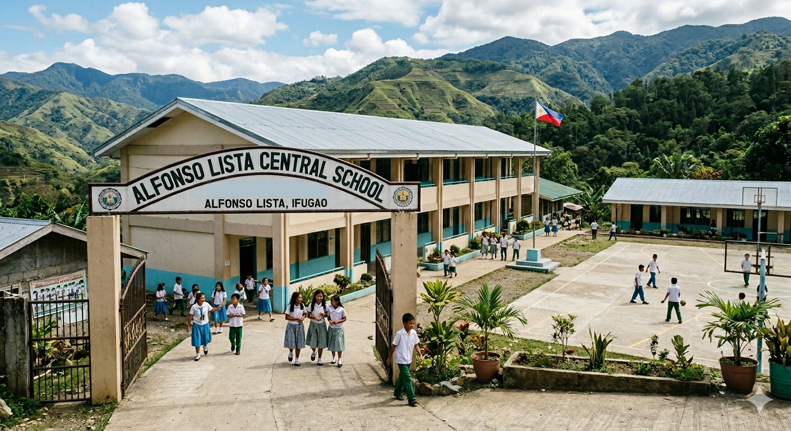

Verse 1:
In the heart of Ifugao land so fair,
Alfonso Lista, we proudly share,
A place of learning, strong and true,
Where dreams begin and hopes renew.
Verse 2:
Guided by wisdom, truth, and care,
We strive for excellence everywhere,
With minds that grow and hearts that lead,
We rise to serve in word and deed.
Chorus:
Alfonso Lista Central School,
Our guiding light, our shining jewel,
We stand as one, loyal and true,
Forever proud of me and you.
With courage, faith, and unity,
We build our future faithfully,
Alfonso Lista, we sing for you,
Our Alma Mater, strong and true.